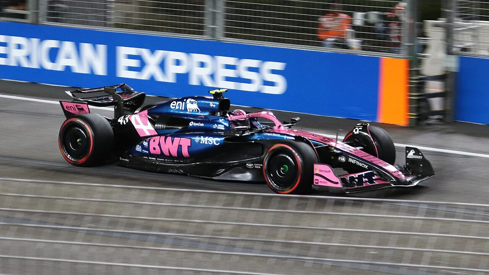
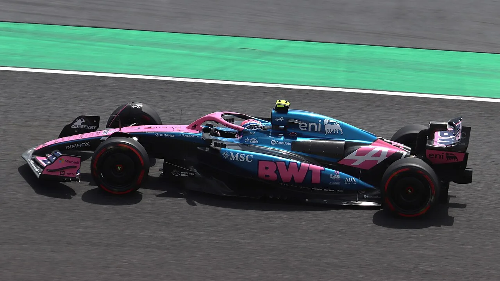
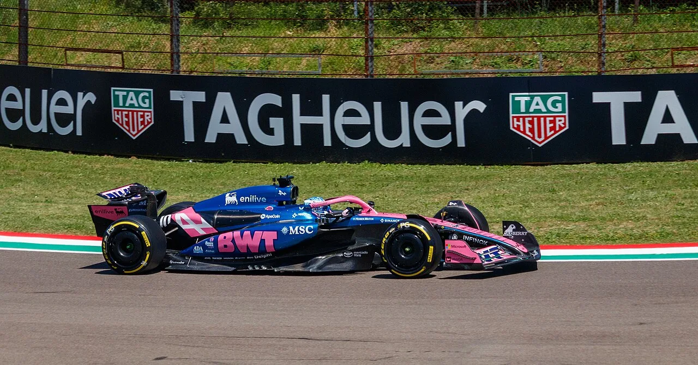

▲ 알핀 F1 머신. 2027년부터 팀 명칭이 '구찌 레이싱 알핀 포뮬러1 팀'으로 바뀐다
구찌가 알핀 F1팀의 타이틀 파트너로 합류합니다. 2027년부터 팀 공식 명칭은 '구찌 레이싱 알핀 포뮬러1 팀'으로 바뀝니다. 팀 이름 앞에 스폰서 이름이 붙는 것 자체는 F1에서 흔한 일입니다. 하지만 그 자리에 들어간 이름이 럭셔리 패션 브랜드라는 점은 처음입니다. 이 계약이 왜 지금, 왜 알핀에서 나왔는지를 짚어봤습니다.
1. 로고만 붙이는 계약이 아니다
이번 파트너십에서 눈여겨볼 대목은 협업의 범위입니다. 알핀에 따르면 구찌와의 작업은 머신 디자인, 드라이버 레이싱 슈트, 관련 상품 개발까지 함께 진행되고 있습니다. 여기에 전 세계 구찌 매장에서 F1 상품을 판매하는 방안도 추진 중입니다.
일반적인 F1 스폰서십은 머신의 특정 위치에 로고를 노출하고 그 대가로 금액을 지불하는 구조입니다. 노출 면적과 위치에 따라 가격이 매겨지고, 계약이 끝나면 로고를 떼면 그만입니다. 반면 이번 계약은 머신의 외관 디자인 자체에 브랜드가 개입하고, 그 결과물이 다시 구찌의 유통망을 통해 상품으로 팔립니다. 스폰서가 광고주가 아니라 공동 제작자에 가까운 위치에 서는 구조입니다.
알핀이 이를 두고 "팀의 브랜드와 사업 기반을 바꿀 중요한 전환점"이라고 표현한 이유가 여기에 있습니다. 후원금이 들어오는 것을 넘어, 팀 자체가 하나의 소비재 브랜드로 확장될 수 있는 통로가 열리기 때문입니다.

▲ 알핀 머신에는 이미 여러 스폰서 로고가 자리하고 있다. 구찌는 그중 타이틀 자리를 가져간다
2. F1 타이틀 스폰서의 계보
F1에서 타이틀 스폰서 자리에 어떤 업종이 앉아 있었는지를 따라가면, 그 시대 자본이 어디에 있었는지가 보입니다.
1970~90년대는 담배의 시대였습니다. 말보로가 대표적입니다. TV 광고가 막힌 담배 회사들에게 F1은 전 세계에 브랜드를 노출할 수 있는 몇 안 되는 창구였고, 팀 예산의 상당 부분을 담배 자본이 채웠습니다. 이후 각국의 담배 광고 규제가 강화되면서 이 흐름은 2000년대에 사실상 끝났습니다.
그 빈자리를 채운 것은 통신·에너지·금융이었습니다. 그리고 2020년대 들어서는 암호화폐 거래소와 핀테크 기업들이 대거 유입됐다가, 시장 침체와 함께 상당수가 물러났습니다. 스폰서 업종의 부침은 그 자체로 산업 사이클의 지표 역할을 해왔습니다.
럭셔리 패션은 이 계보에서 새로운 항목입니다. 물론 패션 브랜드가 F1과 접점을 만든 사례가 아예 없지는 않았습니다. 다만 대부분 특정 그랑프리 협찬이나 트로피·유니폼 협업 같은 부분적 결합이었습니다. 머신 자체에 이름을 걸고 팀 명칭까지 바꾸는 것은 결이 다릅니다.
| 시기 | 주요 업종 | 배경 |
|---|---|---|
| 1970~90년대 | 담배 | TV 광고 규제 회피 창구 |
| 2000년대 | 통신·금융·에너지 | 담배 광고 전면 금지 이후 |
| 2020년대 초 | 암호화폐·핀테크 | 유동성 확대기, 이후 상당수 이탈 |
| 2027년~ | 럭셔리 패션 | 관객 구성 변화와 팬층 확대 |
3. 구찌는 왜 지금 F1에 왔나
럭셔리 브랜드가 모터스포츠에 접근하는 것은 사실 자연스러운 일이 아니었습니다. 기름과 타이어, 굉음의 이미지는 럭셔리 패션이 전통적으로 관리해온 이미지와 거리가 있었습니다. 그런데 최근 몇 년 사이 F1의 관객 구성이 크게 달라졌습니다.
가장 큰 계기는 넷플릭스 다큐멘터리 '드라이브 투 서바이브'였습니다. 경기 결과보다 드라이버와 팀 사이의 서사를 앞세운 이 시리즈는 기존 모터스포츠 팬이 아니던 시청자, 특히 젊은 층과 여성 시청자를 대거 끌어들였습니다. 여기에 미국 시장에서 마이애미와 라스베이거스 그랑프리가 자리를 잡으면서, F1은 스포츠 중계라기보다 패션과 셀러브리티가 오가는 이벤트에 가까운 성격을 갖게 됐습니다.
럭셔리 브랜드 입장에서 이는 정확히 원하던 조건입니다. 전 세계를 순회하며 열리는 20여 개의 대형 이벤트, 그 자리에 모이는 고소득층과 셀러브리티, 그리고 SNS를 통해 확산되는 이미지. 구찌가 지불하는 것은 후원금이지만 사는 것은 그 무대에 상시 입장할 수 있는 권리에 가깝습니다.

▲ 알핀은 2026년 새 규정 시대에 맞춰 팀 구조를 재편하고 있다
4. 하필 알핀이었던 이유
그렇다면 왜 알핀일까요. 상위권 팀이 아니라는 점이 오히려 답에 가깝습니다.
첫째, 타이틀 자리가 비어 있었습니다. 상위권 팀들의 타이틀 스폰서 자리는 이미 장기 계약으로 채워져 있고, 계약 규모도 큽니다. 신규 진입 브랜드가 팀 이름 앞에 자기 이름을 넣을 수 있는 기회는 중위권 팀에서 나옵니다.
둘째, 브랜드 결합의 자유도입니다. 머신 디자인에 외부 브랜드가 개입하려면 팀 내부의 결정 구조가 유연해야 합니다. 오랜 컬러 아이덴티티를 지켜온 팀일수록 이런 협업은 어렵습니다.
셋째, 알핀 쪽의 절박함입니다. 최근 몇 시즌 알핀은 성적과 조직 안정성 양쪽에서 어려움을 겪어왔습니다. 2026년 시작된 새 기술 규정은 판도를 다시 짤 기회이지만, 그만큼 개발비가 듭니다. 스폰서 자금은 곧 개발 예산입니다. 알핀이 구찌 합류 이후 3~4개 브랜드와 추가 협상을 진행 중이라고 밝힌 것도 이런 맥락에서 읽힙니다. 하나의 대형 브랜드가 들어오면 나머지 협상의 조건이 좋아지는, 전형적인 앵커 효과입니다.

▲ 스폰서 자금은 곧 개발 예산으로 이어진다. 2027년 알핀의 성적이 이 계약의 성패를 가른다
5. 남는 질문 — 성적이 따라주지 않으면
이 계약의 가장 큰 변수는 결국 트랙 위의 결과입니다. 럭셔리 브랜드가 스포츠에 투자할 때 가장 경계하는 것은 브랜드 이미지가 부정적인 서사에 묶이는 상황입니다. 팀이 하위권을 맴돌고 리타이어가 반복되면, 그 장면 속 로고는 노출이 아니라 부담이 됩니다.
반대로 새 규정 아래에서 알핀이 반등에 성공한다면, 이번 계약은 F1 스폰서십의 새 모델로 자리 잡을 가능성이 큽니다. 그 경우 다른 럭셔리 브랜드들이 남은 팀들의 타이틀 자리를 두고 움직이는 흐름이 이어질 수 있습니다.
정리하면, 구찌의 알핀 합류는 후원 계약 한 건이 아니라 F1이 어떤 시장을 향해 가고 있는지를 보여주는 신호입니다. 담배가 떠나고 암호화폐가 스쳐 간 자리에 이번에는 럭셔리 패션이 들어왔습니다. 2027년 트랙에 나설 머신의 도색과 그 위에 새겨질 로고가 이 실험의 첫 결과물이 될 것입니다.